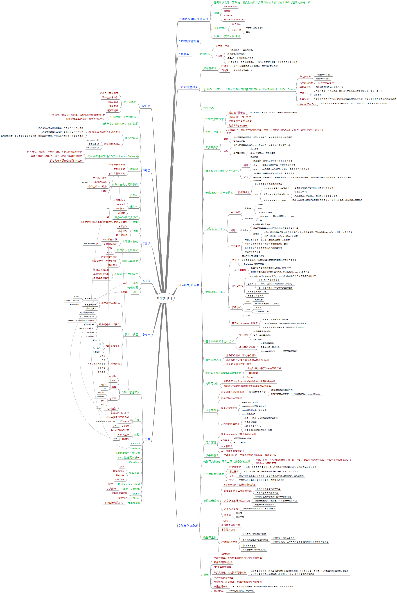

微服务设计

微服务设计
12总结
微服务原则
隐藏内部实现细节
让一切去中心化
可独立部署
隔离失败
高度可观察
什么时候不使用微服务
不了解领域，请先花时间俩姐，尝试识别清晰的模块边界
长实现构建单块系统，稳定后进行拆分
6部署
构建什么、如何构建、如何部署
CI持续集成
jez humble测试别人是否理解CI
你是否每天潜入代码到主线：与其他人代码进行集成
是否有测试来验证修改：自动化验证代码的行为
当构建失败后，团队是否把修复CI当作第一优先级的事情做：即使修复构建错误，防止错误蔓延
CI映射到微服务
多service一CI
多目录多CI
一Service一CI
流水线与持续交付(CD(Continuous Delivery))
例外情况：当开始一个新的项目，需要花时间识别边界
当项目的API稳定以后，就开始移动到各自的构建中
类似的开源项目也是类似的过程
构建物
平台特定构建物
定制化镜像
自动化管理工具
服务于主机之间的映射
单主机多服务
应用程序容器
tomcat
每个主机一个服务
PaaS
自动化
虚拟化
传统虚拟化
vagrant
Container
LXC
Docker
服务器环境定义编排
工具
7测试
类型
《敏捷软件测试》Lisa Crispin和Janet Gregory
范围
单元测试
服务测试
端到端测试
实现服务测试
mock还是打桩
智能打桩服务
mountebank
消费者驱动的测试
CDC
Pact
部署后再测试
区分部署和测试
金丝雀发布（灰度发布）
蓝绿测试
8监控
不同部署方式的监控
单服务单服务器
单服务多服务器
多服务多服务器
日志
工具
关联标识
级联
断路器
9安全
认证与授权
用户身份认证授权
单点登陆实现
SAML
OpenID Connect
单点登录网管
Shibboleth
细粒度授权
服务间身份认证授权
边界内允许一切
HTTPS基本认证
使用SAML和OpenID Connect
客户端证书
HTTP上的HMAC
API密钥
代理问题
静态数据安全
算法选择
密钥
加密备份
按需解密
深度防御
防火墙
日志
入侵检测和预防系统
网络隔离
操作系统
工具
自动化管理工具
Ansible
Fabric
配置
Puppet
Chef
包管理
NuGet
Chocolaty
fpm
deb
定制镜像
packer
日志
logstash 日志聚合
Kibana查看日志的系统
Graphite
系统指标模式发现工具
Metrics
jvm
监控
collectd收集OS状态
nagios监控
Hystrix
jvm
vagrant
Terraform
Riemann事件服务器
suro 数据流水线
Omniture
安全工具
ZAP
Brakeman
Nessus
OWASP
Redis Memcached
缓存
Squid、Varnish
反向代理
Zipkin
服务间调用追踪
Storm
实时分析
shibboleth
单点登陆相关工具
10康威定律与系统设计
任何组织设计一套系统，所交付的设计方案再结构上都与该组织的沟通结构保持一致
证据
Window vista
Netflix
Amazon
RealEstate.com.au
服务所有权
共享服务
内部开源
守护者（核心提交）
工具
限界上下文与团队结构
11规模化微服务
故障无处不在
故障不可避免
如何避免故障
如何从故障中恢复
故障衡量
响应时间/延时
可用性：24/7
数据持久性
功能降级
优雅失败
生成静态页面，提供给用户，降低故障影响
架构行安全措施
相应慢时最糟糕的故障模式
分布式系统中，延迟是致命的
安全的与下游交互
设置超时
舱壁隔离不同的连接池
断路器
失败一定数量，服务下线
偶尔发送健康检查
健康达标后，重新上线
反脆弱组织
Netflix通过人工制造故障检测系统
Google灾难恢复测试
DiRT
模拟地震
编写程序引发故障
一些项目
混乱猴子：一天特定时间段随机停止服务器
混乱大猩猩：堆积关闭整个可用去
延迟猴子：再系统之间注入网络延迟
NetflixHystrix
一种断路器实现
Latency and falure torence library
幂等
执行多次多产生的影响，与执行一次的影响相同
http中GET和PUT中被定义为幂等
安全的重复执行
扩展
强大的主机：竖向扩展
单主机单服务
复杂均衡
SSL终止
HTTPS请求进入负载均衡后，转化为http调用
VLAN
AWS弹性负载均衡：ELB
扩展数据库
服务的可用性与数据的持久性
扩展读取
制度副本
缓存系统
扩展写操作
分片
复杂性来源与查询处理（跨分片）
MongoDB自动分片
MongoDB采用map/reduce处理跨片查询并放到缓存（异步）
CQRS
缓存
客户端、代理和服务端缓存
CDN
Redis Memcached
Squid、Varnish
HTTP缓存
cache-control
Expires head
Etag
服务端返回资源会带Etag
客户端发请求将获得的Etag放到If-None-Match head
如果资源没有变化，返回304(未修改)
写缓存
write-behind
厚些是缓存：先写入缓存，一定条件后再写入磁盘或数据库
缓存中毒
缓存系统尽量简单
CAP定理
描述
一致性 可用性 分区容忍性只能保证2个
一致性
访问多个节点是能得到一致的结果
可用性
每个请求都能得到响应
分区容忍性
某些节点故障，集群整体还可以提供服务
牺牲一致性
牺牲可用性
牺牲分区容忍性
CA
分布式系统中不存在
一般认为大部分打击服务器为CA
服务发现
DNS
不同环境中域名指向不同机器
DNS指向负载均衡
Zookeeper
Consul
go
Eureka
自己构建
文档服务
Swagger
HAL与HAL浏览器
超媒体
超媒体作为应用程序状态引擎
资源+相关链接
1微服务
什么是微服务
专注做一件事
自治性
一个服务就是一个单独的实体
服务间彼此独立修改
暴露API，服务间通过API通信
黄金法则：你是否能够修改一个服务并对其进行部署，而不影响其他任何服务
3如何构建服务
好服务标准
松耦合
服务可以独立构建 修改 部署而不需要修改其他系统
高内聚
相关的行为聚集到一起
限界上下文：一个显示边界限定的特定职责from《领域驱动设计》Eric Evans
分为两部分
不需要与外界通信
需要与外界通信
共享的隐藏模型，共享特定的模型
模块与服务
服务边界和限界上下文保持一致
过早划分
将已有代码库划分为微服务，要比从头开始构建微服务简单的多，避免过早划分
划分原则
业务功能
考虑组织内限界上下文时，不应该从共享数据的角度考虑，应该从这些上下文提供的功能来考虑
逐步划分上下文
根据企业内部组织结构进行划分上下文，因为组织结构和软件架构会互相影响
技术边界
4集成(最重要)
理想的集成技术
避免破坏性修改
如某服务响应中添加一个字段，消费放不应该受到影响
保证API的技术无关性
使服务易于消费方使用
隐藏内部实现细节
创建用户接口
eq:创建用户，看起来想CRUD操作，实质上还包括给用户法welcom邮件、添加积分等一系列业务流程
同步或异步
同步
发起远程服务调用后，调用方阻塞自己，等待整个操作的完成后返回
请求响应模型
异步
调用方不需要等待操作完成，直接返回，甚至不关心操作是否完成
基于事件模型
发布/订阅
难点：处理跨多个服务的事务
异步回调
编排和协同(跨服务业务流程)
编排
同步调用一组服务，等待各个服务的返回结果
优点
知道业务流程中每一步跨服务调用结果
缺点
容易承担太多的调用，太耗时，导致调用方的不稳定性
协同
发布事件，有事件监听者进行处理，属异步调用
降低服务之间的耦合度，带来的额外工作业务流程跨服务的监控，不过可通过消费方处理完成后，回调服务方告知处理结果。
集成方式1：共享数据库
数据库集成
其他服务直接访问相同的数据库
缺点
外部系统能查看内部实现细节
如果服务方修改了表结构，消费方将无法工作
消费放与特定技术绑定到一起
违反技术无关性
想替换服务底层数据库，则消费放也需要全部重写
同种逻辑重复开发，难维护
服务方和消费方相似逻辑需要分别负责维护，修改一种逻辑，类似逻辑也需要修改
集成方式2：RPC
RPC种类
依赖接口
SOAP
Thrift
Protocol Buffers
不依赖接口
Java RMI
要求有相同技术栈：java
等
问题
技术耦合
RMI要求都使用java
网络不可靠导致本地调用和远程调用事实上存在差异
脆弱性
序列化机制的导致服务端修改之后客户端也必须跟着修改，否则传输到客户端的二进制无法被反序列化
使用二进制桩生成的RPC都存在此问题
注意事项
不要对远程调用过度封装，导致网络因素完全被隐藏
在客户端不要隐藏我们正在进行远程调用这个事实
确保服务端升级不需要强制客户端跟着升级
谨慎使用客户端库
集成方式3：REST
简介
REST作为RPC的替代方案
资源是核心概念，资源对外显示方式和内部表示方式不存在耦合
Richardson成熟度模型
REST与HTML
REST没有指定底层使用什么协议，常用HTTP
HTTP丰富的生态可以为REST所用，如认证机制，Varnish缓存代理
HATEOAS
Hypermedia as the Engine Of Application State超媒体作为应用程序状态的引擎
超媒体
资源+指向其他资源链接
HAL-Hypertext Application Language
接口中除资源外，还包含相关资源链接
客户端需要理解API语义
导致通信次数增多
数据格式
XML
数据冗余
XPATH支持查询，工具丰富
Json
轻量级
JsonPath,工具少
其他
基于HTTP的REST的缺点
易用性：无法生成客户端代码
一些web框架对HTTP的各种请求类型支持不够完整
适用于大流量的通信场景，但不适合低延迟通信
基于事件的异步协作方式
技术选择
微服务事件发布机制
消息者接收事件机制
RabbitMQ
异构架构复杂性
灾难性故障转移
设置作业最大重试次数
《企业集成模式》
介绍不同编程模式
服务即状态机
服务根据限界上下文进行划分
服务控制与之相关的对象的生命周期(状态)
服务内聚确保状态一致性
响应式扩展(Reactive extension)
组合异步的、基于事件的应用程序
reactivex
RxJava
按引用访问
微服务应该包含核心领域实体全生命周期的相关操作
按引用访问(延迟获取)有利于保证数据的有效性
版本控制
尽可能延迟破坏性修改
服务保持"宽进严出"
对自己发送的东西要严格
对接受的东西要宽容
容错性读取器(Tolerant Reader)
尽早发现破坏性修改
语义化版本管理
Major.Minor.Patch
Major包含向后不兼容的修改
Minor增加新功能，向后兼容
Patch缺陷修复
不同接口版本共存
在同一个服务上，新版本和旧版本共存
扩展/收缩模式
url使用版本号:/v1/c
不建议长时间同时使用多个版本
用户界面
适用web mobile 穿戴设备多种场景
API组合
界面直接与API通信
API Gateway
UI片段组合
为前端服务的后端(BFF)
绞杀者模式
拦截调用，由开发者决定路由到新代码还是遗留代码
5分解单块系统
关键寻找接缝：限界上下文就是好的接缝
接缝：系统中可以抽取相对独立的一部分代码，这部分代码进行修改不会影响系统其他部分，是划分服务边界的依据
分解单块系统原因
改变的速度
当某一服务需要大量修改时候，将该服务中的接缝抽出来，会加速整体修改的速度
团队结构
团队结构改变，需要重新根据现状进行分解，方便代码开发维护
安全
将某一部分从系统中分离出来，进行单独监控和静态数据保护，提高安全性
技术
不同技术栈，单独将这部分分离出，屏蔽技术相关性
数据库表重构
SchemaSpy可视化DB表间关系
外键约束通过业务逻辑实现
需要实现跨服务一致性检查
周期性触发清理数据任务
共享静态数据.如国家代码
每个服务复制一份数据:有数据一致性问题
将数据放到代码中或配置文件中:数据一致性问题
放到一个单独的服务中
共享动态数据
识别出新的限界上下文，通过API通信
共享表
拆分表
拆分字段
数据库重构
代码分包
数据库表结构分离
事务边界识别
跨服务边界事务
多次重试，保证最终一致性
跨多个服务边界事务失败解决
补偿事务，抵消之前操作
补偿事务失败，进行重试补偿事务/使用后台任务清除不一致状态
分布式事务
从业务逻辑中寻求解决办法
应用分解
报表
报表数据库，主数据库周期性同步到报表数据库
服务调用获取数据
API返回批量数据
异步发消息，轮询资源创建结果
如消费者发出消息，服务者（满数据）创建结果数据到一个指定的位置（快数据），消费者轮询创建结果，成功后去相应位置取数据----数据库导出数据到csv，将csv文件位置返回给调用者
推送数据到报告系统
中间程序，访问服务，获得数据存到报告数据库
事件数据导出
客户增删改时发送事件，报告数据库接受并处理事件，实现数据的存储
aegisthus
Netflix的解决办法，开源产品